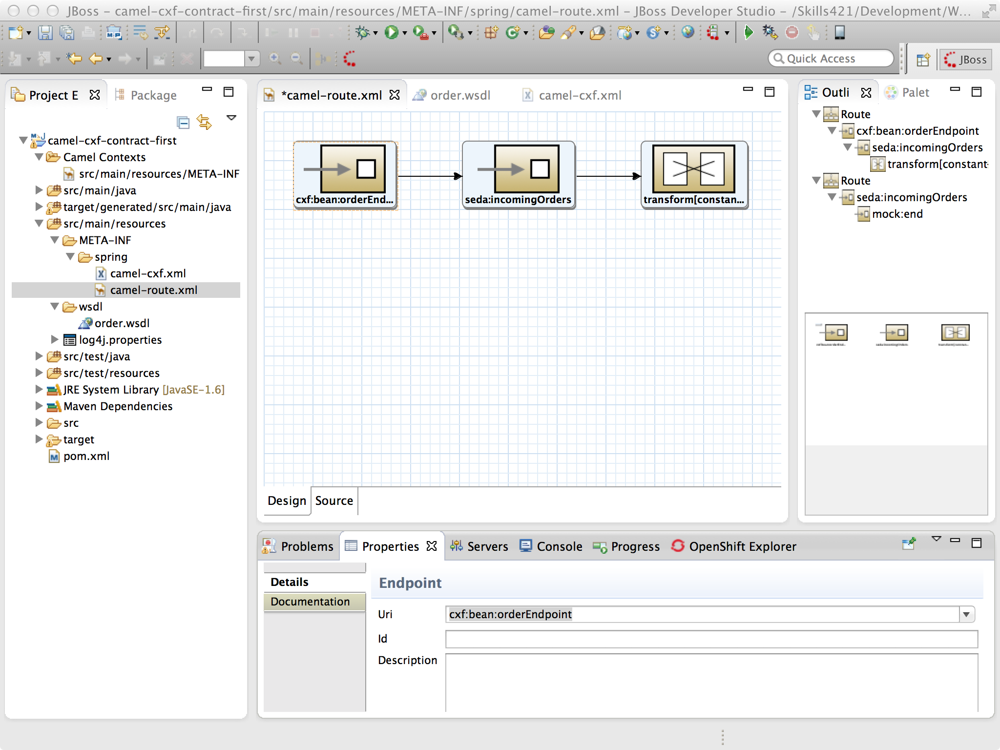
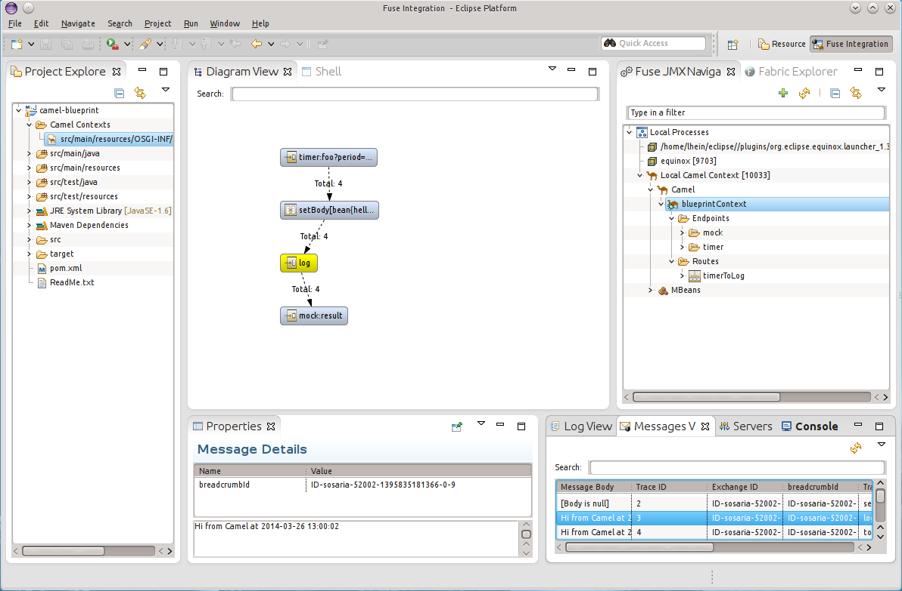
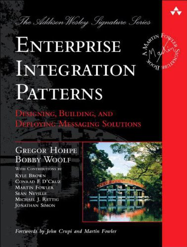
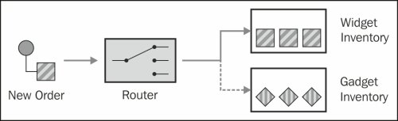

Red Hat | Bryan Saunders
Red Hat | Bryan Saunders
Red Hat | Bryan Saunders
Red Hat | Bryan Saunders
Apache Camel ™ is a versatile open-source integration framework based on known Enterprise Integration Patterns.
- Apache Camel Website
Apache Camel is an open source Java framework that focuses on making integration easier and more accessible to developers. It does this by providing: concrete implementations of all the widely used EIPs, connectivity to a great variety of transports and APIs, and easy to use Domain Specific Languages (DSLs) to wire EIPs and transports together
- Jonathan Anstey
Integration is Critical for Business
Framework does the Heavy Lifting
Lets you Focus on the Problem
Prevents Re-inventing the Wheel
Started in March 2007
Founded by
First Release in June 2007
Spawned from Apache ServiceMix and Apache ActiveMQ
Very Leightweight , Consists of only a handful of JARs
Easy Configuration
No Heavy Specification
No Container Dependencies
Payload Agnostic
Minimal Configuration
DSL Based Programming
6 DSL's and Counting
from("file:src/data?noop=true")
.choice()
.when(xpath("/person/city = 'London'"))
.to("file:target/messages/uk")
.otherwise()
.to("file:target/messages/others");
$foo = 'bar'
$foo = 'cheese'
|
|
191 Components and counting
Component for pretty much anything
Most commonley used components
| ahc | aws-ddb | beanstalk | cometid | dataformat | ejb |
| ahc-ws | aws-sdb | bean-validator | context | dataset | eleasticsearch |
| amqp | aws-ses | box | controlbus | direct | spring-event |
| apns | aws-sns | browse | couchdb | direct-vm | eventadmin |
| atmosphere | aws-sqs | cache | crypto | dns | exec |
| atom | aws-swf | class | cxf | disruptor | |
| avro | aws-s3 | chunk | cxfbean | docker | file |
| aws-cw | bean | cmis | cxfrs | dropbox | flatpack |
| freemarker | google-drive | hdfs | imaps | jira | krati |
| ftp | gogle-mail | hdfs2 | irc | jms | language |
| ftps | gmail | hl7 | javaspace | jmx | ldap |
| gauth | geocoder | infinispan | jclouds | jpa | |
| ghttp | github | http | jcr | jsch | log |
| glogin | guava-eventbus | http4 | jdbc | jt400 | lucene |
| gtask | hazelcast | ibatis | jetty | kafka | metrics |
| google-calendar | hbase | imap | jgroups | kestrel | mina |
| mina2 | nagios | pax-logging | rabbitmq | rss | sips |
| mock | netty | pop3 | ref | salesforce | sjms |
| mongodb | netty4 | pop3s | rest | sap-netweaver | smtp |
| mgtt | netty-http | printer | restlet | schematron | smpp |
| msv | netty4-http | properties | rmi | seda | smpps |
| mustache | olingo2 | quartz | rnc | servlet | snmp |
| mvel | openshift | quartz2 | rng | sftp | solr |
| mybatis | optaplanner | quickfix | routebox | sip | spark-rest |
| splunk | stax | ssh | xquery | db4o | nmr |
| spring-boot | stream | validation | xslt | esper | rcode |
| spring-batch | stomp | velocity | yammer | fabric-amq | scalate |
| spring-int | string-temp | vm | zookeeper | fabric-fabric | smooks |
| spring-ldap | stub | weather | activemq | fabric-master | spring-neo4j |
| spring-redis | test | websocket | activemq-broker | hibernate | virutalbox |
| spring-ws | timer | xml-security | activiti | jbi | zeromq |
| sql | xmpp | couchbase | jcifs |
|
Try...Catch...Finally
Exception Clause in Java DSL
Error Handlers
Support for Exponential Backoff of Retries
from("direct:start")
.doTry()
.process(new ProcessorFail())
.to("mock:result")
.doCatch(IOException.class, IllegalStateException.class)
.to("mock:catch")
.doFinally()
.to("mock:finally")
.end();
onException(ValidationException.class)
.to("activemq:validationFailed");
onException(ShipOrderException.class)
.to("activemq:shipFailed");
from("seda:order").to("bean:processOrder");
errorHandler(deadLetterChannel("jms:queue:dead")
.useOriginalMessage()
.mamimumRedeliveries(5)
.redeliverDelay(5000));
errorHandler(defaultErrorHandler()
.allowRedeliveryWhileStopping(false)
.maximumRedeliveries(20)
.redeliveryDelay(1000)
.retryAttemptedLogLevel(LoggingLevel.INFO));
Allows for custom backoff of retries.
Syntax: limit:delay;limit2:delay2;limit3:delay3;...;limitN:delayN
If delayPattern=5:1000;10:5000;20:20000 then we get
Four Broad Categories of Security Offered
Policy driven security for routes or route segments
Encryption and decryption services for secure paylods
Some components can be secured, but not all
Externalize configuration properties
Load Balancing Policies
Thread and Service Pools
Asynchronous API
Clustering
Not natively supported
Provided by the following components
Native test frameworks
Supports unit and integration Testing
Built in mock & stub support
Advanced testing with NotifyBuilder and AdviceWith
Works with 3rd party test frameworks
| Name | Component | Description |
|---|---|---|
| Camel Test | camel-test | Standalone Java library to create Camel test cases using a single Java class for all your configuration and routing without using Spring or Guice |
| Spring Testing | camel-test-spring | Supports JUnit 4 tests that bootstrap a test environment using Spring without needing to be familiar with Spring Test. |
| Blueprint Testing | camel-test-blueprint | Provides the ability to do unit testing on blueprint configurations |
| Guice | camel-guice | Uses Guice to dependency inject your test classes |
| Camel TestNG | camel-testng | Supports plain TestNG based tests with or without Spring or Guice |
public class FilterTest extends CamelTestSupport {
@EndpointInject(uri = "mock:result")
protected MockEndpoint resultEndpoint;
@Produce(uri = "direct:start")
protected ProducerTemplate template;
@Test
public void testSendMatchingMessage() throws Exception {
String expectedBody = "matched";
resultEndpoint.expectedBodiesReceived(expectedBody);
template.sendBodyAndHeader(expectedBody, "foo", "bar");
resultEndpoint.assertIsSatisfied();
}
@Override
protected RouteBuilder createRouteBuilder() {
return new RouteBuilder() {
public void configure() {
from("direct:start").filter(header("foo").isEqualTo("bar")).to("mock:result");
}
};
}
}
Several tools exist for working with and monitoring Camel


|
Similar to Design Patterns Focused specifically on Integration Written by Gregor Hohpe & Bobby Wolf 65 Documented Patterns Camel supports 53 of them |
 |

|  |
|

Used for defining routes
Multiple DSL's exist
Set of rules that define message flow
Consists of:
Implementation of the Message Endpoint pattern
Created by components
Referred to by uniue URI's in the DSL
Consumers receive messages
Producers send messages
Essentially a factory for Endpoint instances
Adds functionality to Camel
Custom components extend DefaultComponent
Consumes message exchanges
Processor interface for building custom Processors
Used to encapsulate custom business logic
Can be turned into a full Component
Supports multiple Exchange Patterns
Implements Message EIP
Anywhere that supports Java 1.6
Included in JBoss Fuse
Included in JBoss Fuse Service Works
Supported on EAP 6.1.1+
Improved Test Support
Persistent Message Store
Java 8 DSL
Split/Optimize Camel-CXF
Full EAP Subsystem
Improved Integration with JEE Standards
Updated JEE Related Camel Components
Full Arquillian Support
Available now in Wildfly 8.1
Official Support in future Fuse Release